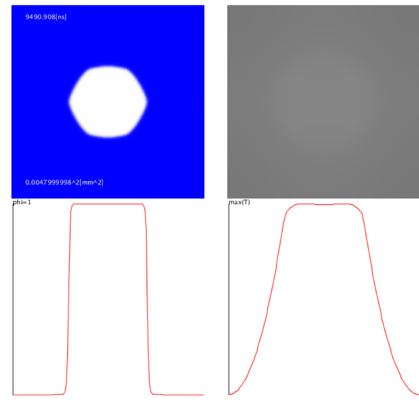
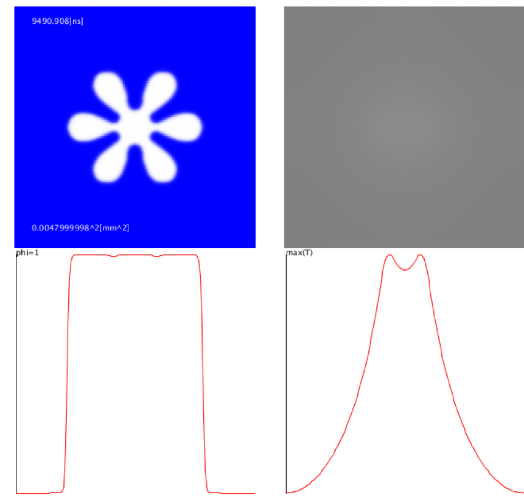
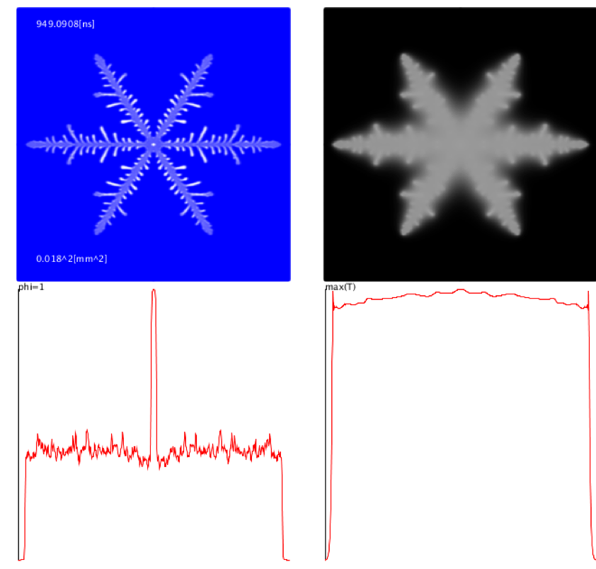

2016年度秋学期火曜6限の授業の課題で作成した, 雪結晶の成長シミュレーションです. Processingを使っています.
(参考文献) 小山敏幸・高木知弘 フェーズフィールド法入門 (丸善出版) p.62 - p.68 凝固(純金属におけるデンドライト成長)
左から温度-15度,過飽和度110%, 温度-15度,過飽和度130%, 温度-20度,過飽和度130%
上段の背景(青)が固相の存在確率(値が大きいほど白い), 背景(黒)が温度(値が大きいほど白い)の広がりを示す.
下段はその値に応じたグラフを表している.
  